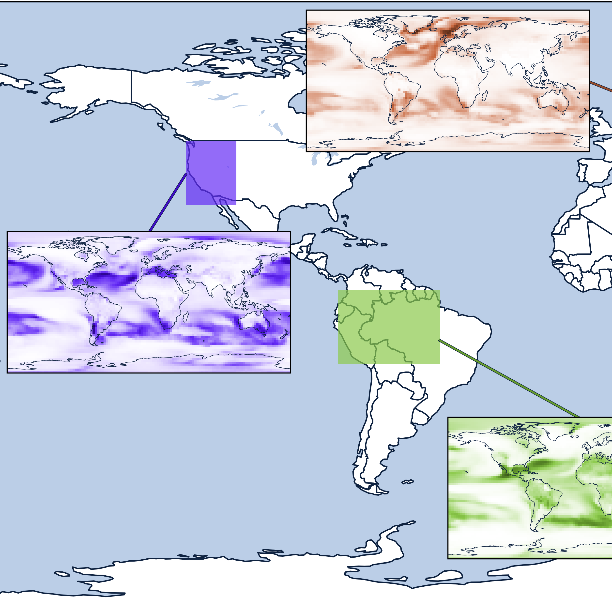
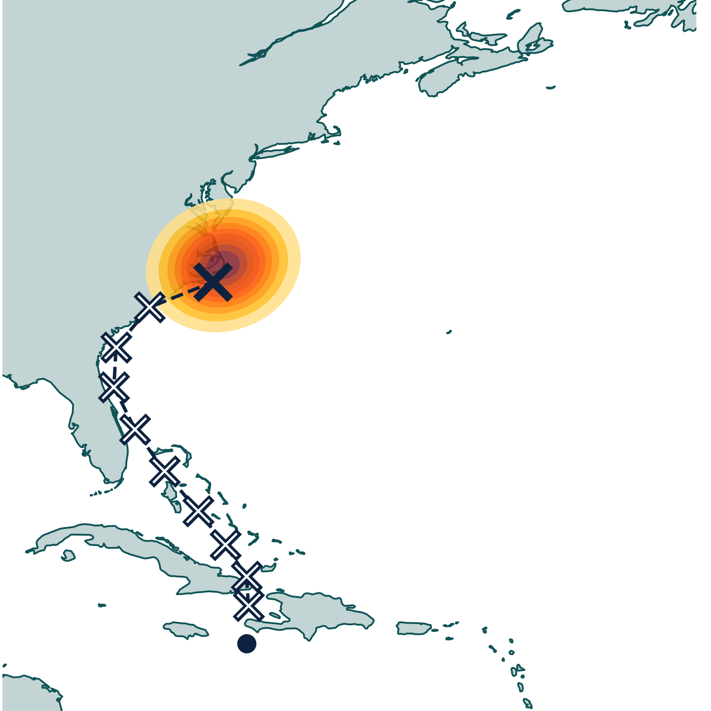

current research

Analog forecasting is a method of weather and climate prediction that assumes past weather/climate evolve similarly to current weather/climate. The idea is that if current conditions look similar to some time in the past, then the known evolution of that past state can serve as a prediction for the future. Instead of matching current observations with historical observations, we match current observations with model simulations, thus we are doing model-analog forecasting. In the paper below, I use machine learning to identify the most important global regions to match current states with model-analogs for several specific prediction tasks (location, lead time).

TCANE (Tropical Cyclone Artificial Neural-network Error) is a project aimed at improving tropical cyclone track and intensity error forecasting. This can be of use for forecasters and communities affected by these storms. In the paper below, I trained a machine learning model for predicting track forecast errors. The model is trained on historical data, including tropical cyclone forecast track errors, and the output is a storm specific error (bivariate normal) distribution.